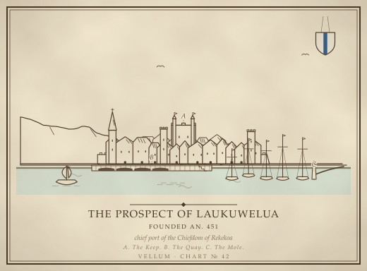
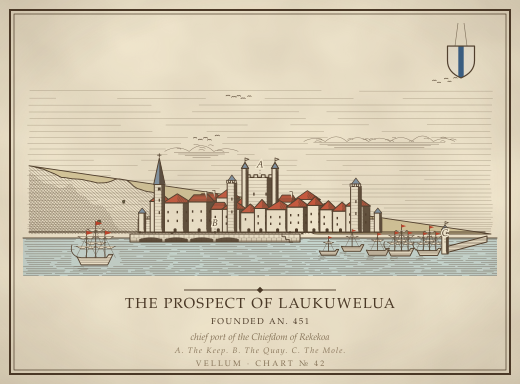
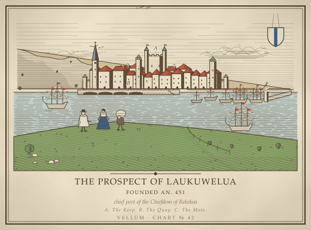
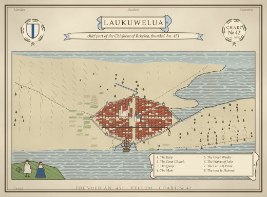
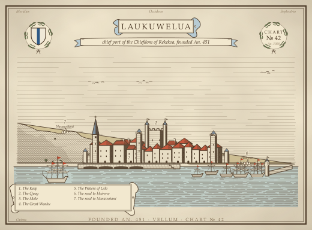

Issue #747, the capital at the sizes the surfaces show a plate
352px wide (the prospect page's folio column, 22rem, as a proxy for the Reading Room stage)

Today's plate (the control)

A. The engraver's burin

B. From the rise

C. The bird's-eye

D. The named plateE. After Hoefnagel (B + A + D, the recommendation)
160px wide (an inset or place-mark card)
Today's plate (the control)A. The engraver's burinB. From the riseC. The bird's-eyeD. The named plateE. After Hoefnagel (B + A + D, the recommendation)